글로 된 계획이 왜 답답할까요?
Claude가 세운 계획은 어떤 파일을 만들고 데이터를 어디에 둘지까지 꼼꼼히 적어 줘요. 그런데 내 화면이 실제로 어떻게 생길지는 글만 읽어서는 감이 잘 안 와요. 그래서 "일단 만들어 줘"로 넘기게 되죠.
문제는 결과를 본 다음이에요. 화면을 보고 나서야 "이 버튼은 여기 있었으면 좋겠는데", "이 기능도 필요했는데"가 떠올라요. 그러면 처음부터 다시 설명해야 해요. 아래 장면은 메일 작성 창의 보내기 버튼을 보다가, 오른쪽 위 '예약' 버튼 자리를 화살표로 가리키는 모습이에요.
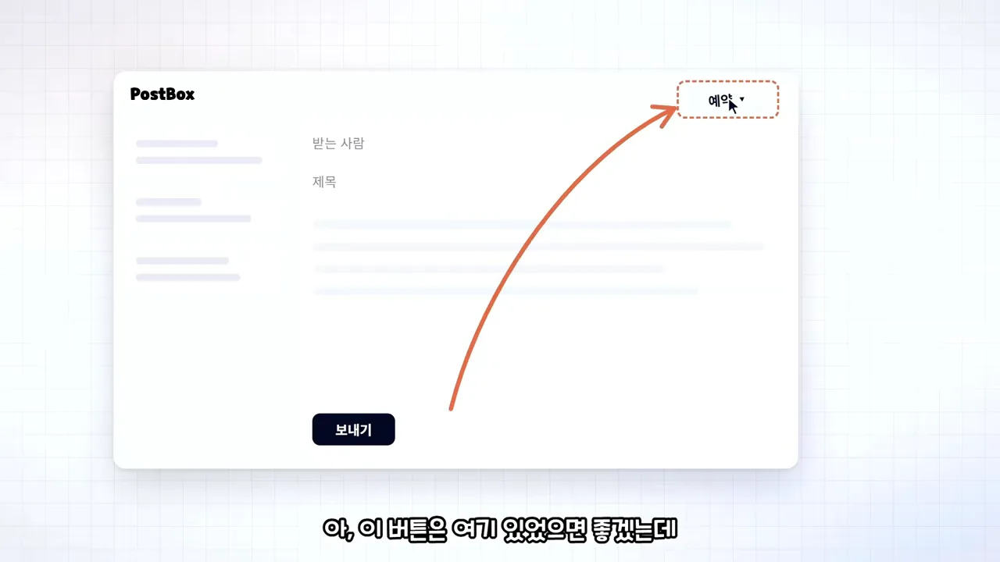
화면을 먼저 보면 달라져요. 어떤 화면이 나올지 확인하고, 그 자리에서 내가 정할 것을 고르면 되거든요. 아래 질문 카드는 '발송 실패를 어떻게 알려줄까요?'를 묻고 있어요. '앱 안에서만 알려주기'가 추천으로 골라져 있고, '앱과 이메일로 알려주기'에 주황 테두리가 둘려 있어요.
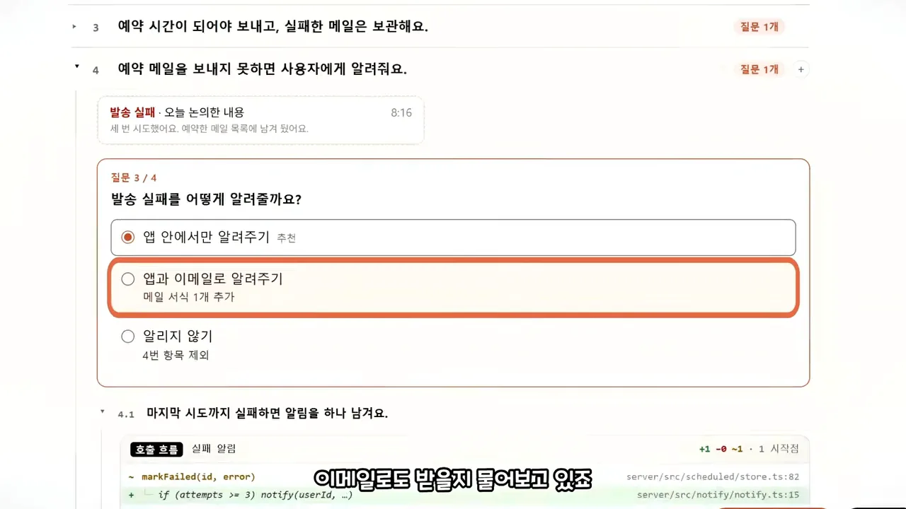
이걸 해 주는 게 html-plan이라는 Claude Code 플러그인이에요. 화면을 보고, 선택지를 고르고, 빠진 의견을 덧붙여 다시 보내는 방식이에요. GitHub 저장소 anthropics/claude-plugins-community에 있어요. 왼쪽 폴더 목록에 eli5, html-plan, next-steps, quickdesign 같은 플러그인이 보여요. eli5는 영상 제작자가 예전에 소개한 플러그인이에요.
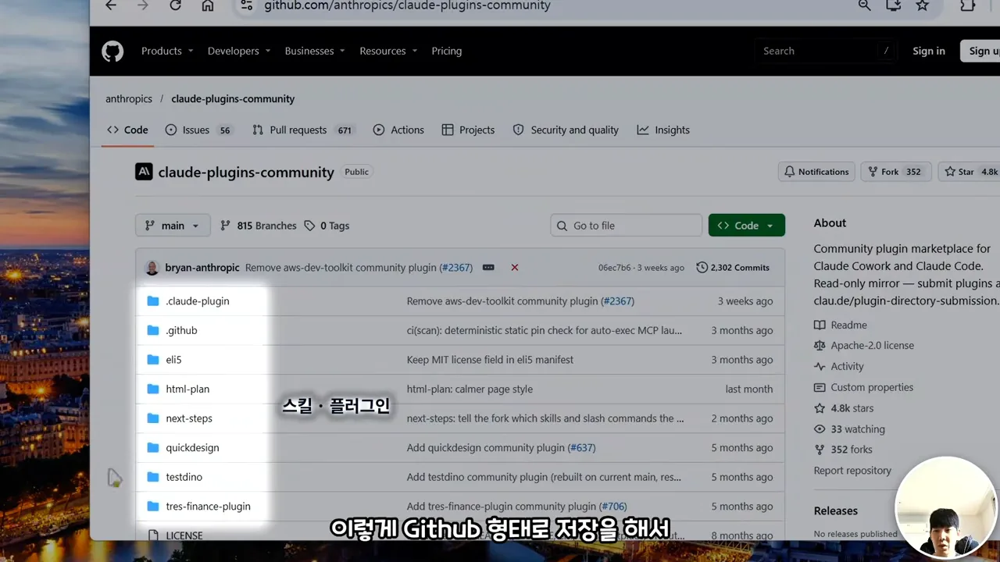
영상 제작자는 이 저장소를 'Anthropic 사람들이 많이 쓰는 스킬과 플러그인을 모아 둔 곳'이라고 소개해요.
설치하고 첫 계획 만들기
설치는 저장소 README의 'Claude Code' 항목에 나온 두 줄이면 돼요. README에는 터미널용 claude plugin … 형태로 적혀 있어요.
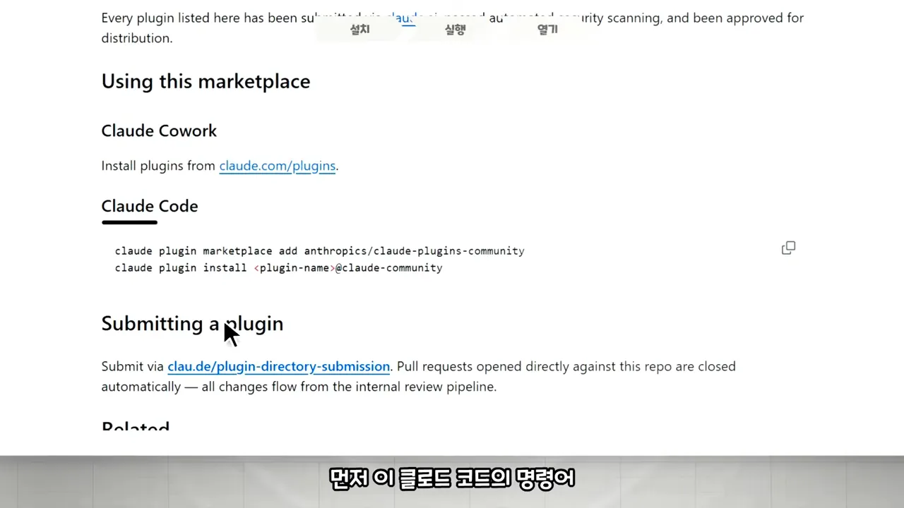
영상에서는 같은 일을 Claude Code 안에서 슬래시 명령으로 해요. 첫 줄을 넣으면 초록색으로 'Successfully added marketplace: claude-community'가 뜨고, 둘째 줄을 넣으면 설치가 시작돼요.
- 마켓플레이스 등록 —
/plugin marketplace add anthropics/claude-plugins-communitySuccessfully added marketplace: claude-community - 플러그인 설치 —
/plugin install html-plan@claude-communityInstalling plugin "html-plan@claude-community"…
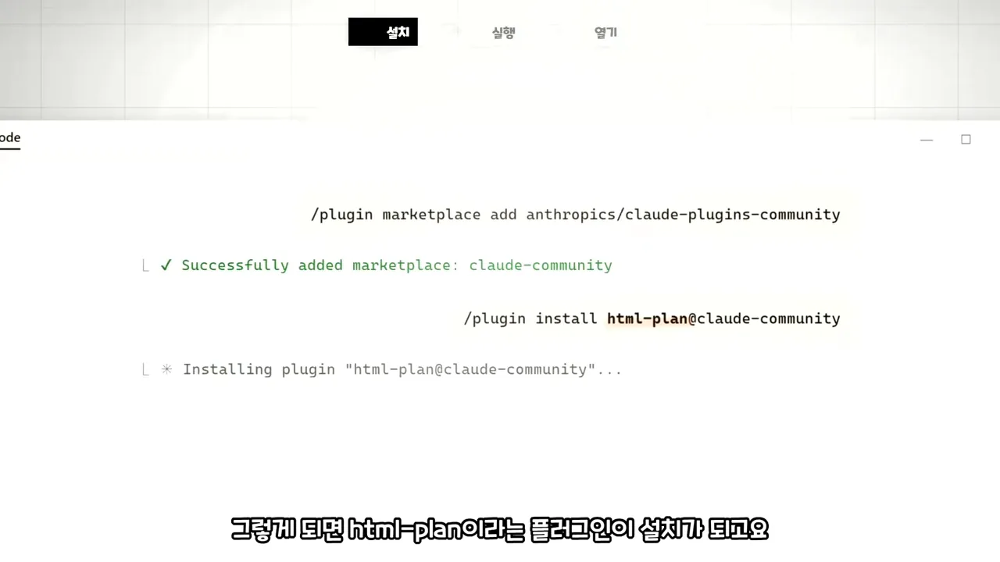
/html-plan 뒤에 원하는 기능을 써요
실행은 입력창에 /html-plan을 쓰고 그 뒤에 만들고 싶은 기능을 적으면 돼요. 영상 속 요청에는 세 가지가 담겨 있어요. 원하는 시간에 보내기, 보내기 전 취소, 실패 알림이요. 그리고 끝에 '바로 구현하지 말고 화면이랑 질문부터'를 붙였어요.
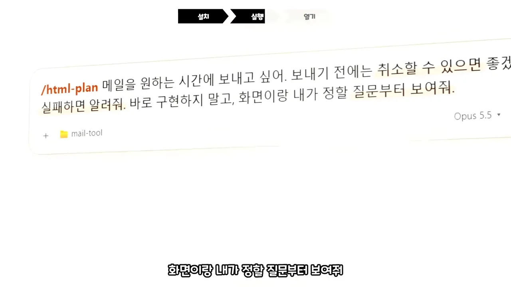
여기에 '설명과 질문은 한국어로 써 달라'는 말도 덧붙였어요. 스킬 원문에 모든 글을 쉬운 영어로 쓰라는 지침이 있어서예요. 아래 화면의 테두리 친 줄이 그 지침이에요. 'Write all prose in ASD-STE100 Simplified Technical English (STE)'라고 적혀 있어요.
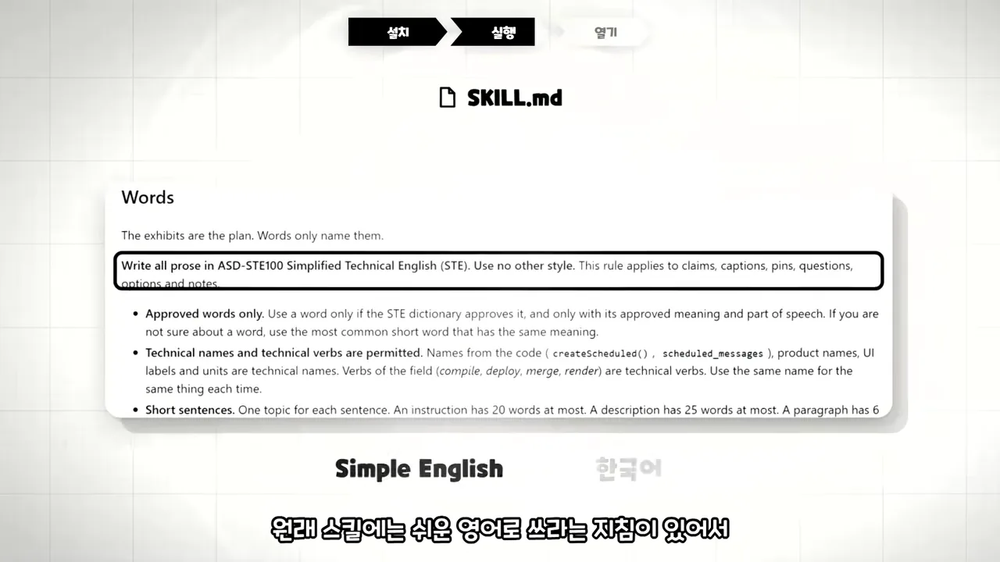
보내면 Claude가 프로젝트 파일(web/src/composer/Composer.tsx, server/src/mail/send.ts)을 읽고, 스킬을 불러, docs/plans/scheduled-send.html을 써요. 이어서 pack.mjs로 한 파일로 묶어요. 마지막 줄은 "계획서를 만들었어요. 결정할 질문은 4개예요. 기본값은 제가 만들 쪽으로 골라뒀어요."예요. 만들어진 scheduled-send.packed.html을 브라우저로 열면 돼요.
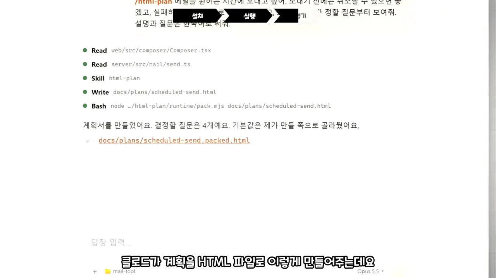
계획서 읽기: 화면 미리보기와 코멘트
여기부터는 저장소에 공개된 예제 scheduled-send.html로 설명해요. 제목은 'PostBox 메일 예약 발송 계획'이에요. 아직 메일을 실제로 보내는 화면이 아니라, 추가할 기능을 제안하는 계획서예요.
제목 아래에 '구현 계획 · 파일 9개 · +5 추가 · ~4 변경함'처럼 바뀔 파일 수가 나와요. 그 밑에 굵은 항목 네 개가 있어요. 1) 메일 작성 화면에서 보낼 시간을 고를 수 있어요. 2) 예약한 메일을 한곳에서 보고 수정할 수 있어요. 3) 예약 시간이 되어야 보내고, 실패한 메일은 보관해요. 4) 예약 메일을 보내지 못하면 사용자에게 알려줘요. 맨 아래에는 '공통으로 쓰는 예약 발송 테이블 추가'와 '일반 발송, 임시 보관함, 메일 제공자는 그대로' 두 줄이 붙어요.
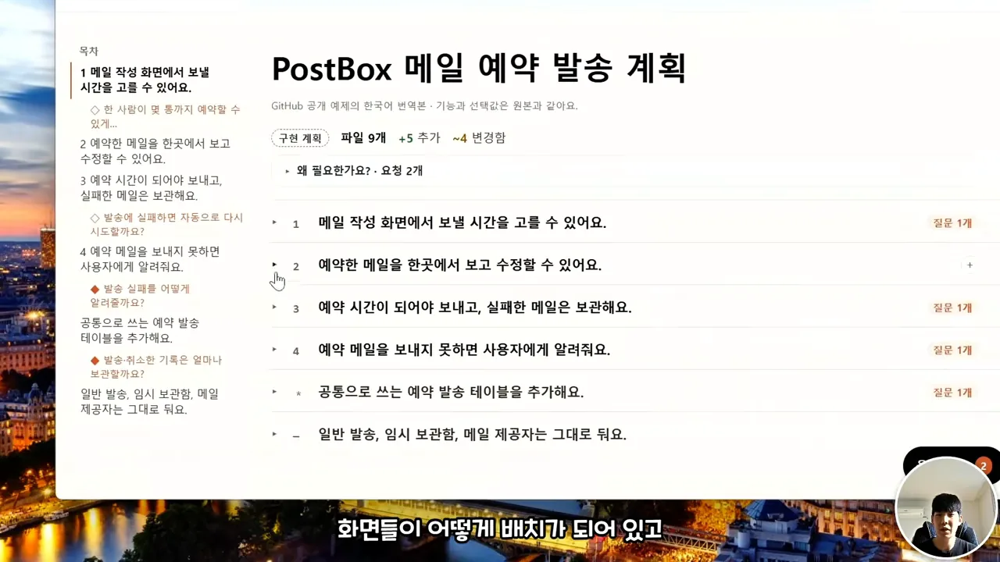
왜 이렇게 나눴을까요? 밤늦게 일을 끝냈는데 지금 메일을 보내긴 애매한 상황을 떠올려 보면 돼요. '내일 아침에 도착하게 예약 발송 기능을 넣어 줘'라고 말하기는 쉬워요. 그런데 막상 쓰려면 정할 게 더 있어요. 보내기 전에 취소할 수 있는지, 실패하면 알려 주는지 같은 것들이요. 예제는 이런 걸 항목마다 같이 확인하게 해 줘요.
2번 항목을 펼치면 '예약한 메일' 목록 화면이 나와요. '오늘 논의한 내용'은 월요일 8:00, '3월 청구서'는 4월 1일 9:30에 보낼 예정으로 잡혀 있어요.
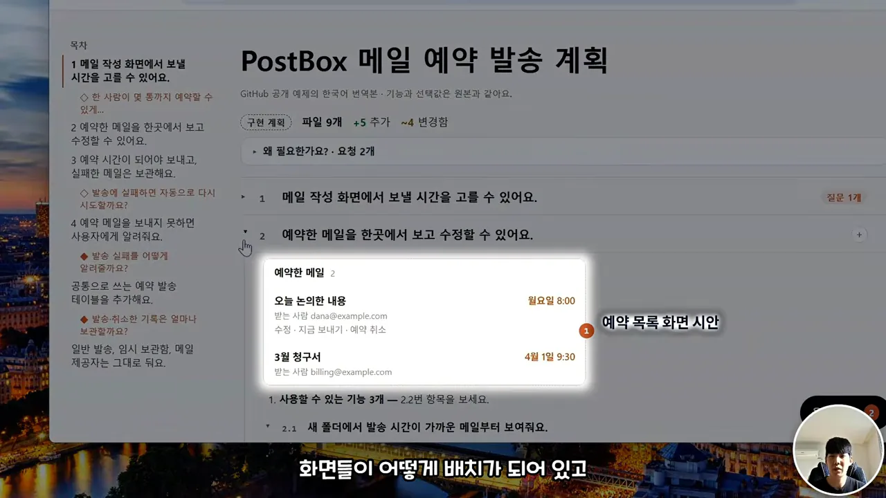
버튼이 어디에 붙는지 미리 봐요
1번 항목 옆 세모를 누르면 메일 작성 화면 목업이 펼쳐져요. 아래쪽 보내기 버튼 옆에 '예약 발송' 버튼이 새로 붙어 있어요. 누르면 '내일 아침 8:00', '월요일 아침 8:00', '날짜와 시간 직접 고르기…' 세 가지가 떠요. 더 아래로 내리면 이 버튼을 눌렀을 때 흐름이 어떻게 이어지는지 코드 예시도 볼 수 있어요.
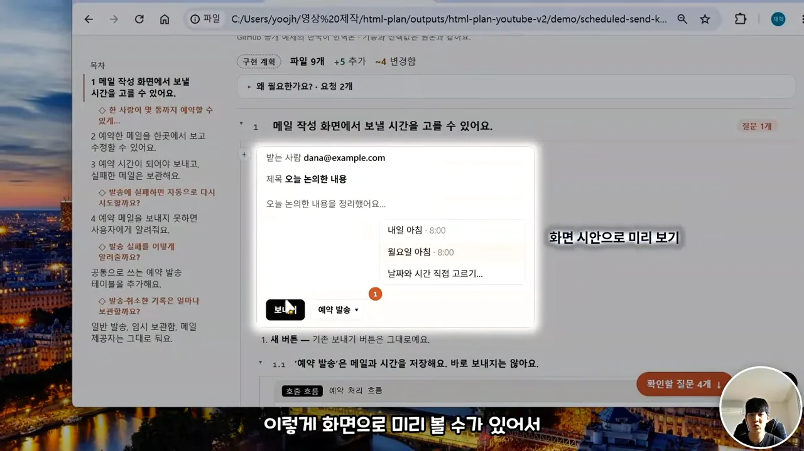
마음에 안 들면 코멘트로 남겨요
버튼을 다른 곳에 두고 싶으면 그 버튼을 클릭하고 코멘트 칸에 적으면 돼요. 영상에서는 예약 발송 버튼을 받는 사람 옆으로 옮기고 싶다고 썼어요. 아래 화면의 흰 입력칸에 '받는 사람 옆으로 이동시켜줘'가 적혀 있어요. 저장하면 이 코멘트가 나중에 Claude에게 보낼 응답에 같이 들어가요.
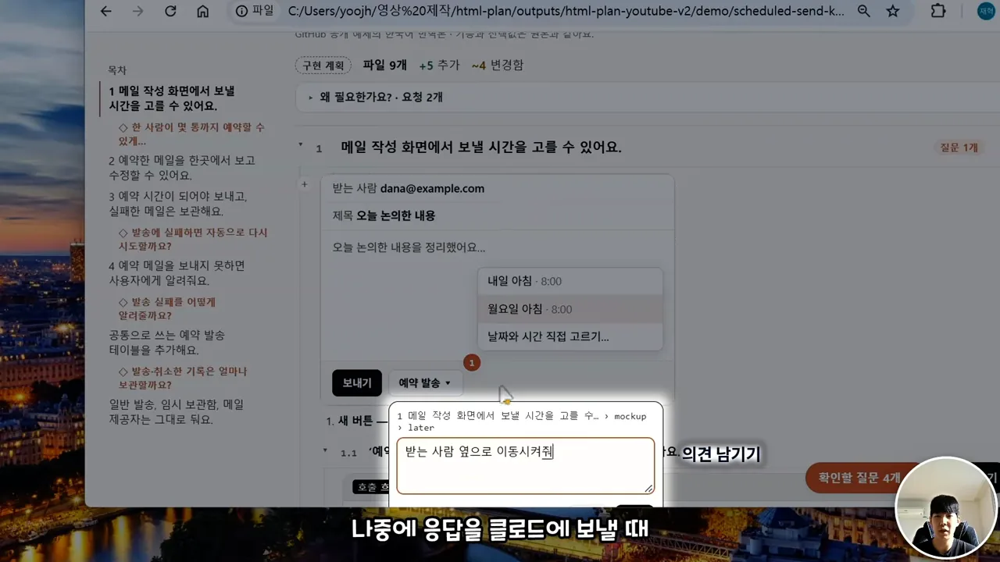
질문에 답하고 Claude에 돌려주기
왼쪽 목차에 주황색 글씨 네 줄이 있어요. Claude가 계획을 세우려고 던진 질문이에요. 질문은 4개이고, 하나씩 눌러서 답해요. 영상에 나온 선택지와 영상 제작자가 한 일을 먼저 표로 모았어요.
| 질문 | 선택지 (추천값) | 영상에서 한 일 |
|---|---|---|
| 1. 한 사람이 몇 통까지 예약할 수 있게 할까요? | 50 (추천) · 500 · 제한 없음 | 500으로 바꿔 보고, '50·100·제한 없음 3가지로' 의견을 남김 |
| 2. 발송에 실패하면 자동으로 다시 시도할까요? | 네, 5분 간격으로 3번 (추천) · 아니요 | 추천값 유지 |
| 3. 발송 실패를 어떻게 알려줄까요? | 앱 안에서만 (추천) · 앱과 이메일 · 알리지 않기 | 앱과 이메일로 변경 |
| 4. 발송·취소한 기록은 얼마나 보관할까요? | 30일 보관 후 삭제 (기본값) | 열어 보지 않음 |
질문 1 · 한 사람이 몇 통까지 예약할 수 있을까요
첫 질문의 선택지는 50(추천), 500, 제한 없음이에요. 영상에서는 500을 골랐어요. 이제 '응답 보기'를 누르면 1.3 항목이 500으로 바뀌어 있어요.
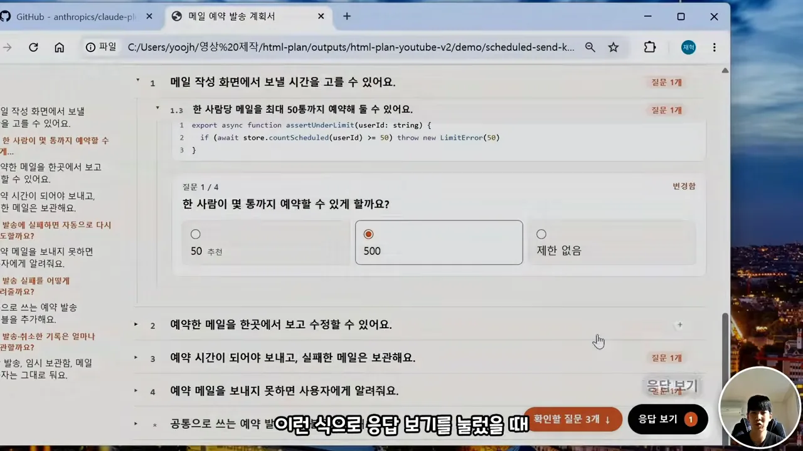
선택지에 없는 답을 내고 싶을 때도 있어요. 그럴 땐 항목에 의견을 적으면 돼요. 영상에서는 '50개, 100개, 제한없음 이렇게 3가지로 만들어줘'라고 적고 저장했어요. 아래 화면의 흰 입력칸이 그 자리예요.
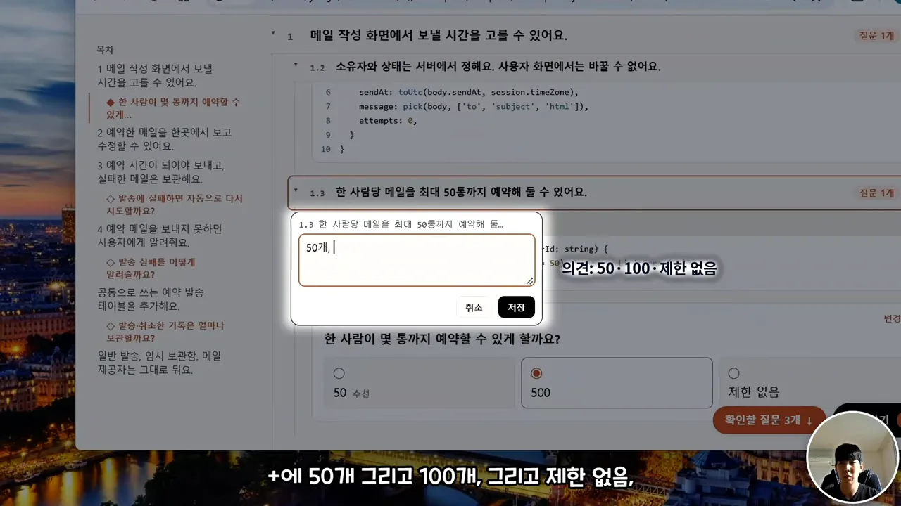
'응답 보기'를 다시 열면 '클로드에게 보낼 응답' 창이 떠요. '결정한 내용' 1번에 500과 '(이전: 50)'이 함께 보여요. 아래 '남긴 의견'에는 방금 쓴 '50개, 100개, 제한없음' 의견이 들어 있어요. 나머지 질문 2~4는 아직 열지 않아서 '아직 확인하지 않음 · 기본값 유지'로 나와요.
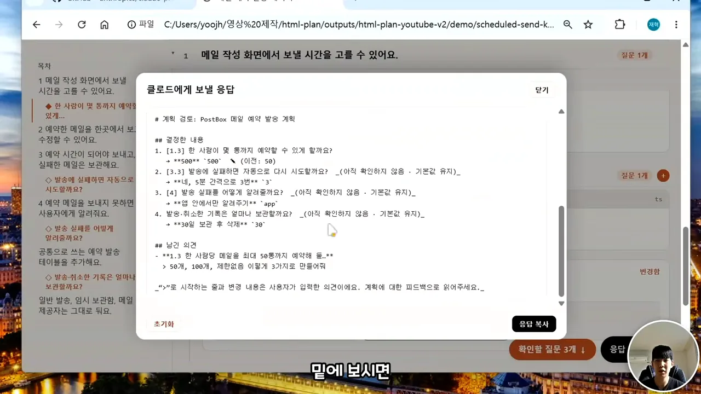
질문 2·3 · 재시도와 실패 알림
질문 2 '발송에 실패하면 자동으로 다시 시도할까요?'는 추천값인 '네, 5분 간격으로 3번'을 그대로 뒀어요. 질문 3은 '발송 실패를 어떻게 알려줄까요?'예요. 선택지마다 무엇이 바뀌는지 작은 글씨로 붙어 있어요. '앱과 이메일로 알려주기'에는 '메일 서식 1개 추가', '알리지 않기'에는 '4번 항목 제외'가 적혀 있어요. 영상 제작자는 이메일로도 한 번 더 받고 싶어서 '앱과 이메일'을 골랐어요.
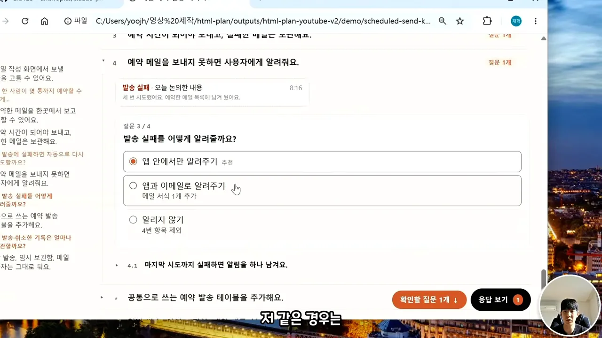
응답 창을 다시 열면 질문마다 상태가 갈려 있어요. 열어 보고 추천을 그대로 둔 건 '확인 후 제안 유지'로 나와요. 바꾼 건 '앱과 이메일로 알려주기 (이전: 앱 안에서만 알려주기)'처럼 나와요. 질문 4 '발송·취소한 기록은 얼마나 보관할까요?'는 아직 열지 않아서 '30일 보관 후 삭제'가 기본값으로 남아 있어요. 그래서 확인이 더 필요하다고 표시돼요. 이 장면에서는 질문 1이 다시 추천값 50으로 돌아가 있어요.
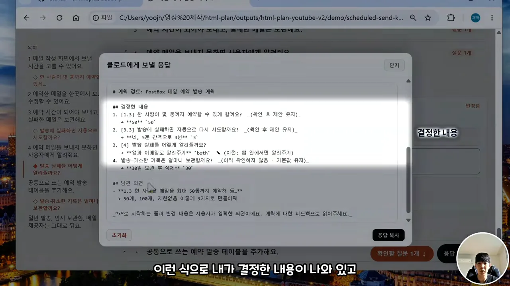
응답을 복사해서 Claude에 붙여요
응답 창의 '응답 복사'를 누르고, 같은 Claude 대화에 붙여 넣으면 돼요. 그러면 내가 요청한 내용과 화면에서 본 그대로 수정해 줘요. 아래 장면은 복사한 응답을 간단히 그린 카드예요. 결정한 내용 네 줄과 남긴 의견 한 줄('예약 취소 전에 확인 창을 띄워 주세요')이 들어 있어요.
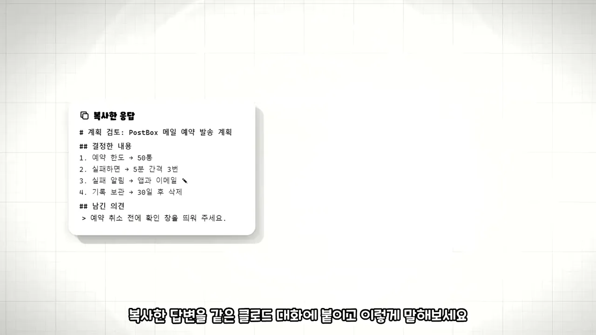
영상이 권하는 말은 이래요. "내가 고른 내용과 의견을 반영해 줘. 예약 취소 확인 창이 뜨면 화면이 어떻게 바뀌는지부터 보여 줘." 오늘처럼 공개 예제로 연습할 때는 예제 HTML 파일도 같이 주면 돼요. 실제 작업이라면 바뀐 계획을 다시 확인하고 나서 만들게 하면 돼요. 아래 그림은 여기까지의 흐름을 한 번에 이은 거예요.
flowchart LR A["/html-plan 요청"] --> B["HTML 계획서 열기"] B --> C["화면 목업 보기"] C --> D["질문 고르기 · 코멘트"] D --> E["응답 복사"] E --> F["같은 대화에 붙이기"] F -->|"계획이 바뀌면"| B F --> G["구현"]
SKILL.md에 적힌 규칙과 다른 작업에 쓰기
지금까지 본 흐름은 플러그인의 SKILL.md에 적힌 대로 움직여요. 스킬은 Claude가 따라야 할 작업 지침서예요. 맨 위에는 이름과 사용 조건이 있어요. 이름은 html-plan이고, description에는 '사용자가 /html-plan을 입력하거나, 무언가 만들기 전에 계획·RFC·설계를 요청할 때 쓴다'고 적혀 있어요. 영상은 이걸 '구현 전에 계획을 보고 싶을 때 쓰는 스킬'로 풀어요.
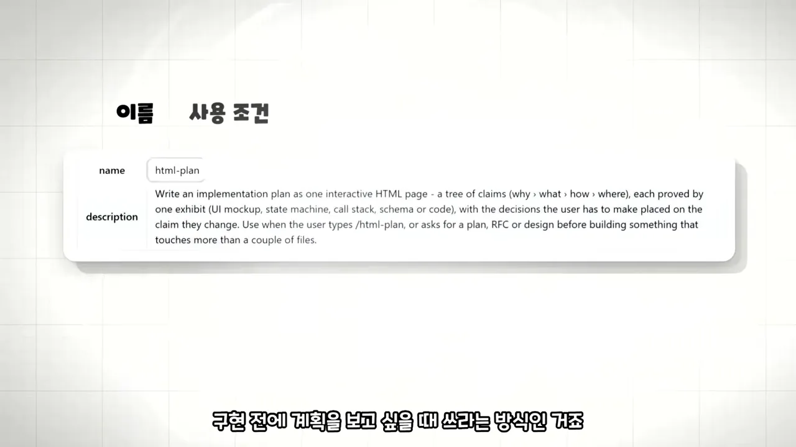
위에서 아래로: 화면 → 작동 방식 → 코드 위치
다음은 문서 구조예요. 아래 그림의 1단계 '화면 · 동작'에는 사용자가 보게 될 메일 작성 화면이 있어요. 펼치면 2단계 '작동 방식'으로 내려가요. 여기서는 예약 시간을 저장하는 createScheduled()와 insert scheduled_messages가 보여요. 더 들어가면 routes.ts:18 같은 코드 위치가 나와요. 앞에서 메일 작성 화면을 보고 필요한 부분만 열어 본 게 이 구조예요.
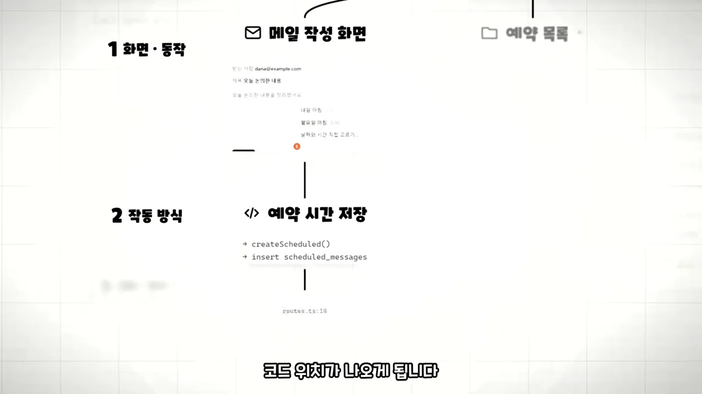
규칙과 쓰는 순서
규칙도 꽤 구체적이에요. 아래 Rules 목록 1번 'Split the top level by behaviour'에 테두리가 쳐져 있어요. 맨 위 항목을 '사용자가 할 수 있는 일'별로 나누라는 뜻이에요. 6번은 질문을 그 질문이 바꾸는 항목 바로 옆에 두라는 규칙이에요. 그래서 실패 알림 항목을 보다가 알림 방식도 같이 고를 수 있었던 거예요.
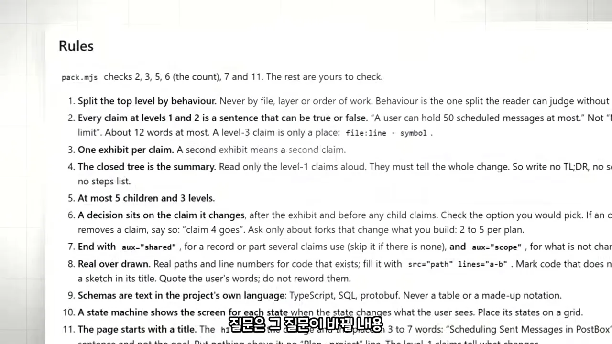
쓰는 순서도 정해져 있어요. 아래 화면의 Steps 박스 밑에 읽기 → 작성 → 묶기 → 확인 네 칸이 있어요. 설명은 짧게 하고, 프로젝트를 먼저 읽고, 계획서를 만든 다음, 마지막에 브라우저로 확인해요.
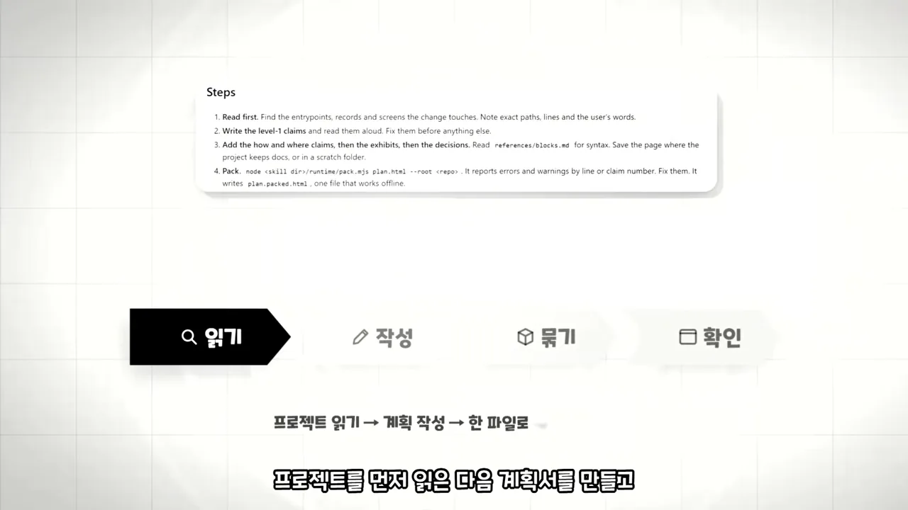
마지막에는 선택과 의견을 한 번에 돌려받는 방법이 나와요. 두 가지 금지 규칙이 있어요.
Do not start building until that response arrives.
그 응답이 오기 전에는 만들기 시작하지 마세요.
— 영상 08:33 (SKILL.md 화면)
그리고 답하지 않은 질문을 기본값에 동의한 걸로 보지 말라고 해요.
다른 작업에 가져가기
정리하면 화면을 보여 주고, 필요한 걸 묻고, 내 답을 반영해 흐름을 정하는 구조예요. 아래 그림의 원이 그 순환이에요. 화면 보기 → 필요한 질문 → 내 답 반영으로 돌아요. 아래에 '소개 페이지', '파일 정리', '다른 작업' 세 아이콘이 있어요. 메일 예약이 아니어도 된다는 뜻이에요.
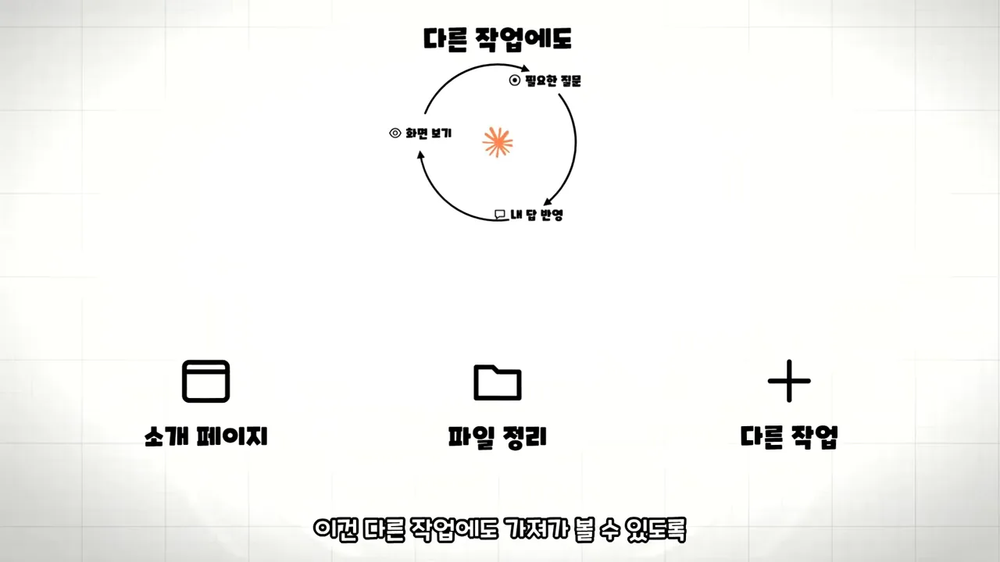
영상이 드는 예는 두 가지예요.
- 내 소개 페이지 — 소개 글을 먼저 보여 줄지, 작업물을 먼저 보여 줄지 화면을 보며 골라요.
- 파일 정리 도구 — 전부 옮기기 전에 목록부터 보여 달라고 해요.
말로만 물어볼 수도 있어요. 하지만 관련 화면을 같이 보면 "이걸로 할래"가 훨씬 쉽게 나와요. 그래서 다음에 뭔가 만들어 달라고 할 때 이 한 줄을 먼저 붙여 보라고 해요.
소개 페이지 만들어줘. 화면이랑 내가 정할 것부터 보여줘
— 영상 09:41 (입력창 화면)
원하는 걸 처음부터 완벽하게 설명하기는 어려워요. 일단 보고, 마음에 드는 쪽을 고르고, 빠진 건 그 자리에서 얘기하면 돼요. 영상은 이 '보기 → 고르기 → 얘기하기'를 html-plan의 전부라고 정리해요.